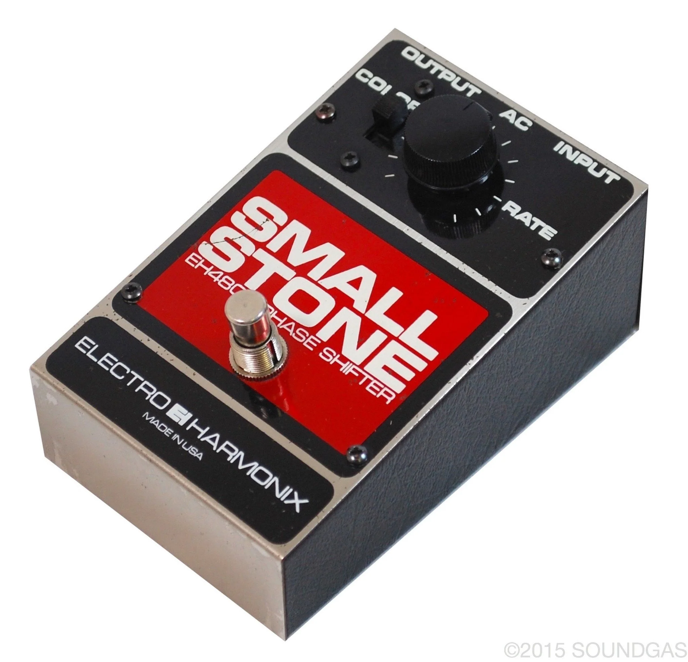
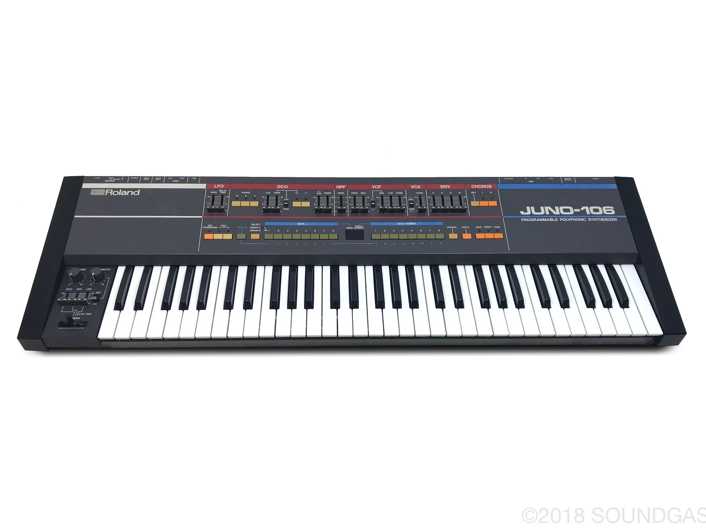
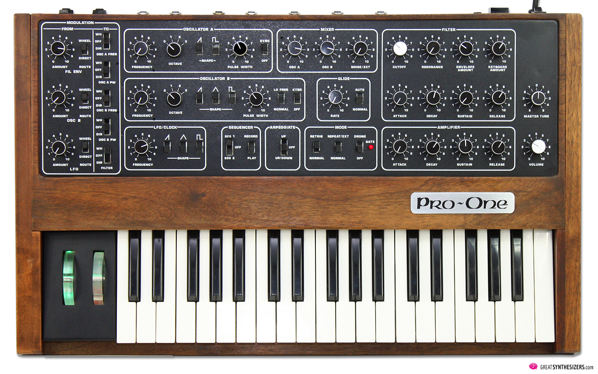

2. Endors Toi
Endors Toi, azaz „altasd el magad” vagy „aludj el”. Tökéletes cím egy tökéletes számhoz.
Ha az előző szám nem, akkor ez mindenképpen cementálja az album minőségét a hallgató számára. Ez kissé vicces, mivel eredetileg az Innerspeaker-re került volna, de végül az nem lett dupla album. Itt újra fel lett használva és átdolgozva, ami mindenképpen nagyot dobott rajta.
Témája a napok meg nem álló, ugyanolyan ismétlődése, a való élet semmilyensége, ami mind kínzásnak tűnik. A dal énje az álmaiba menekül a nap fáradtságaitól, az álomvilág megnyugvást ad neki. Úgy is tekinthetjük, hogy ez a szám egy altató.
Az éber álmodás (lucid dreaming) tevékenysége áll a központban, amelyet sokan arra használnak, hogy elmeneküljenek a valóság felelősségei elől (bár ez egy egészségtelen szokássá válhat).
A dal énje mást nem is vár a napban, mint hogy elmeneküljön ide. A túl sok alvás emellett a depresszió jele is lehet, ez esetben az én minden életkedve elment, már csak az alvás ad neki boldogságot. Kevin maga is kedvelte az éber álmodást.
A szám elején egy erősen eltorzított, phased gitár játssza az akkordokat. Ez a gitár tónus jellemző Kevinre, mert általában nem a megszokott módon építi fel a pedáltábláját. A számon valószínűleg az EHX Small Stone  hallható. A szám végén a gitár még kap egy fuzz effektet is.
A gitárral egyidőben megjelenik a szintetizátor is, amin „sikló” (glide) effekt van, tehát egy hangról a másik hangra siklik, illetve kissé el van hangolva (unison detune). A lead szintetizátor vagy egy Juno-106, vagy egy Sequential Circuits Pro-One. Később megjelenik egy arpeggiált szintetizátor is, ami szabad módban, fentről lefele megy.

Roddy Bailey feldolgozása
A dobolás ezen a számon egyszerűen lenyűgöző. Kevin Parker egy hihetetlenül tehetséges dobos (ami nem csoda, hisz 11 évesen kezdte és az apja is zenész volt), és ezen a számon több mint megmutatta a tehetsége határait.
Nem csak hogy hipnotikus, de komplex is, és még a profiknak is nehéz eljátszani e dal dobolását. Maga a zene, mint Kevin legtöbb számában, dob vezetésű.
A dallamot harmonikusan főleg a basszus viszi, de a végén a fuzz-gitár átveszi a szerepet és az akkordokat a szintetizátorok játszák.
A dal komplexitását, felépítését félretéve, a laikus embert is képes átemelni és egy pszichedelikus utazást ad a hallgató számára, még tudatmódosító szerek alkalmazása nélkül is.